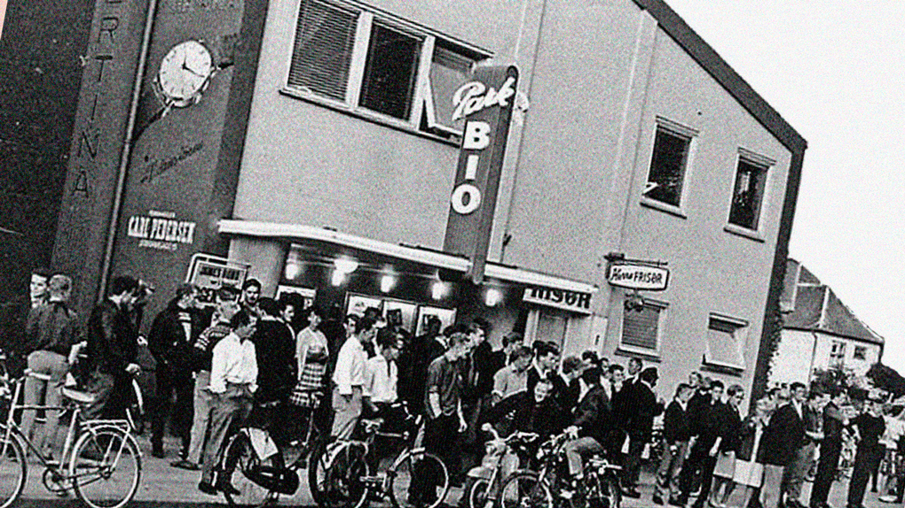
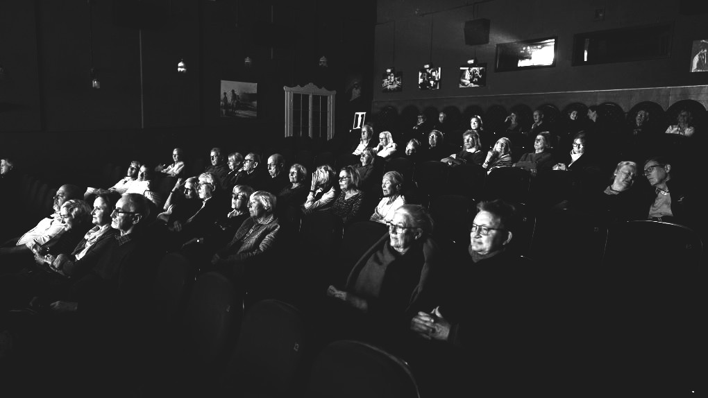

Vores Historie
Vores biograf har i årtier været et samlingspunkt for filmelskere med en særlig kærlighed til dansk filmhistorie. Fra stumfilmstiden til de ikoniske folkekomedier og klassiske dramaer – vi er stolte af at holde liv i de film, der har formet dansk kultur.

Biografen blev grundlagt i midten af det 20. århundrede med et ønske om at bevare og formidle de bedste danske film til nye generationer. I en tid, hvor biograferne blev domineret af internationale storfilm, valgte vi at gå en anden vej og dedikere os til de danske filmklassikere.
I dag præsenterer vi et nøje udvalgt program med alt fra Carl Th. Dreyers kunstneriske mesterværker til Olsen-banden, Matador og Morten Korch-filmene. Vi arrangerer også temaaftener, hvor vi dykker ned i bestemte perioder af dansk filmhistorie.

Vores mål er at give publikum en nostalgisk og unik oplevelse, hvor filmhistorien bliver levende igen på det store lærred.
